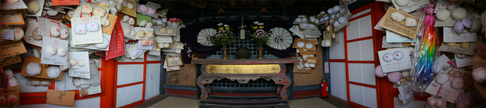

鞆の浦の程近く、沼隈半島の南端にある阿伏兎観音は古くから景勝地として知られている。
この寺は岬の先端にあり、塀の外が海、という素晴らしいロケーションにある。
岬の先端はやや高くなっており、その上に朱塗りの観音堂が建っているのだ。
どちらかというと灯台でも建てた方がいいんじゃねえのか、と思うほどの場所なのだ。
かなりドラマチックなロケーションにチョット感動しつつ階段を上り、観音堂に向かう。
階段をのぼり切るとこんな。
小さな観音堂をぐるりと囲むように回廊が巡らされていて、そこから手の届く木の枝にはたくさんのお守りが結び付けられていた。
中にはかなり命懸けで結んだのでは、と思しき御守りなどもある。くれぐれも無理しないでね。
さて。
ここからが本題です。
寛和年間（10世紀末）に海上交通の安全を祈願して十一面観音が建てられたことをルーツに持つこの観音堂。
現在では航海安全祈願と同時に安産、子授け祈願も承っているのだ。
いや、むしろそっちが完全にメインと化している。
だってこんなですから。
壁が見えないほど大量のおっぱい絵馬が奉納されている。
そのほとんどは奉納者による手作り。

基本フォーマットは厚紙の台紙に布で出来たおっぱいを貼り付けたもの。
もちろん奉納者の造形力やセンス、嗜好（？）によって似たような絵馬でもよく見ると千差万別なのだ。
布も白い布だけではなく、肌色やピンクなども使われている。
中には丁寧に毛糸で編んであるおっぱいまで。
その多くは子宝祈願、安産祈願、おっぱいたくさん出ますように祈願のほぼ三種類。
愛知のあそこみたくGカップ祈願とかそういうのはなかったです。
どっちかというと真剣な願い事ばかりでした。
堂内から外を見れば眼下には瀬戸内の海が。
鞆の浦行きの船が大勢の人を乗せて進んでいった。
乗客の何人かはこちらに向かって手を振っていたが、まさか堂内がこんな事になっているとは知る由もないよな…。
崖下には石塔が建っている。
塔の台座には石像が祀られていた。
振り返れば先ほどの観音堂が。
こうして見てみると半分から上の方は積み石で出来てるんだなあ。
きっとこれだけ高い位置に建っているから船からはいい目印になるのだろう。
さっき灯台を建てればいいのに、と言ったがもしかしたらかつては灯台の役割も担っていたのかもしれない。
海上からも見てみたかった。
観音堂のある岬と石塔の建つ場所の間は小さな入り江になっている。
その入り江が妙に黒っぽかったのでよ〜く見てみると…
うわっ！全部フグの稚魚じゃないか！
あまりにも大量に発生しすぎたからか、岸にまで打ち上げられていたぞ。
おそらく打ち上げられたフグは助かるまい。
大量に生まれ死んでいくフグの群れと母の想いがギュウギュウに詰まったおっぱい絵馬。
あまりにも対照的なのにその姿がどこか似通っているのが不思議だった。